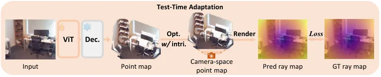
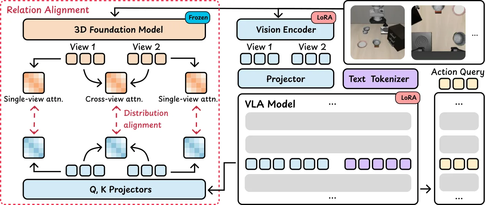

静态网页 · 2026-10-21
可靠状态估计与空间智能每日论文阅读
沿“底层几何 → 3D/4D 表征 → 空间推理 → 具身决策”查看当天候选；按层级、评分、截图和中文摘要筛选，需要原文时可切换 English。
候选论文：2推荐论文：2新论文：2仓库：15新仓库：6
今日概览
- 结论先行：今天两篇都在回答同一个问题——手上已有的量，能不能当成监督用。IntriAdapt 把“已知相机内参”从输入条件翻转为输出端的几何校验器，用视线残差在 1.57M 参数的 LoRA 上做测试时适配；RIGID 把“冻结 3D 基础模型的注意力关系”当成监督目标，用 Sinkhorn-Wasserstein 对齐 VLA 的注意力分布，而不是逼学生特征逐点等于教师。前者是把标定信息变成自监督信号，后者是把教师的关系结构变成蒸馏信号；两者共同的方法论是：不要对齐绝对值，要对齐不变量。
- 一句话数字：IntriAdapt 单图 10 基准平均排名 2.39（MoGe2* 3.16、MoGe2 3.58），序列 6 基准 2.79（MoGe2* 4.18），KITTI 求解残差 7.98→0.92；RIGID 的 LIBERO-Plus 四套件总平均 75.0%（Spatial Forcing 70.3%、π0 53.6%），关系对齐 effective rank 306.3 对点对点的 248.0。
- 对你有用的两条：① IntriAdapt 的 ray residual 是一个不需要真值的自检量，可以直接当作标定漂移/前端退化的报警信号；② RIGID 的 effective rank + 谱熵体检，可以拿来判断“蒸馏有没有把学生网络压扁”，比只看下游指标更早暴露问题。
- 重复过滤：
papers_seen_filtered=4，4 篇历史已见论文被过滤，未作为“跟踪/更新”补入推荐。
- 层级说明：层级沿用采集器
priority_tier/priority_domain，未做升降级改写；两篇分别命中 geometry-foundation-models（IntriAdapt）与 geometry-foundation-models + embodied-navigation + robotic-foundation-models（RIGID）。
- 媒体状态：见文末“媒体与发布”一节。

新论文 · 日期 2026-10-17 · score 11 · S层 · Geometry Foundation Models / 3D Foundation Models · cs.CV
内容级别：完整单篇海报
作者：Jiaxing Chen, Zizheng Yan, Jingyu Zhuang, Jinwei Chen
评分 11/10
测试时适配相机内参LoRA度量几何单目深度视线图残差点图在线标定MoGe2
一句话工作总结：IntriAdapt 的核心是把“已知内参”从输入条件改造成自监督信号。它先按 MoGe 系列的仿射不变点图约定，用已知焦距解出轴向平移 τ，把点图换算成逐像素视线图，再与 K_gt^-1[u,v,1] 归一化得到的真值视线图求余弦残差；梯度经点图回传到插在 DINOv2 编码器每个注意力层的 rank-16 LoRA（1.57M 参数，约主干 0.4%），主干全冻结。单图每…
从图像恢复度量 3D 几何本质上是病态问题，根源是透视投影的歧义。当前的几何模型在推理时会接收或预测内参，但并不用内参去监督模型适配；已有的测试时适配（TTA）方法则普遍依赖外部深度测量。本文反过来把相机内参当作输出端的几何校验器：把预测点云诱导的逐像素视线与已知内参定义的视线做比较，得到一个闭式的几何不一致度量。作者提出 IntriAdapt，在冻结的几何基础模型上只优化一个轻量 LoRA 适配器来最小化该残差，…
Recovering metric 3D geometry from images is fundamentally ill-posed due to perspective projection ambiguity. Current geometry models incorporate supplied or predicted intrinsics during inference, but do not u…

新论文 · 日期 2026-10-17 · score 10 · S层 · Geometry Foundation Models / 3D Foundation Models · cs.RO
内容级别：完整单篇海报
作者：Chaoran Zhu, Hengyi Wang, Chenglin Cui, Yazhe Wan
评分 10/10
视觉-语言-动作模型3D 基础模型知识蒸馏最优传输Sinkhorn秩塌缩旋转不变空间推理LIBERO-PlusVGGT
一句话工作总结：RIGID 先做一个诊断：把 VLA 的视觉 token 逐点对齐到冻结 VGGT 的特征（Spatial Forcing 一类做法），会让 VLA 特征的数值秩显著塌缩（effective rank 248.0 对 306.3，成功率 72.9% 对 85.2%），语义容量随之受损。作者改为对齐成对关系：学生用可学习 q/k 投影算多视图注意力图，教师取 VGGT 第 12…
空间理解是机器人感知环境并执行动作的基础。现有做法通常把 VLA 的表示与预训练 3D 基础模型直接对齐来注入 3D 感知；但作者观察到，这种直接的几何特征对齐本质上是在特征空间里施加一种低秩正则，导致预训练 VLA 表示出现严重的秩塌缩。本文把关注点从“逐点相等”转向“成对关系一致”：提出一种表示对齐方法，在注入 3D 空间感知的同时不牺牲模型原有的表达能力。作者进一步从理论上说明该关系对齐目标具有旋转不变性——…
Spatial understanding is essential for robots to perceive their surrounding environments and execute actions. Existing approaches typically encode 3D awareness into vision-language-action (VLA) models by direc…
精选仓库/项目
默认显示 8 个精选；S/A 领域、新仓库和高分仓库优先，可展开查看完整候选。
Xiaoang0211/ProMo3DOfficial implementation of ProMo3D (NeurIPS 2026): probing motion cues in frozen 3D foundation models.
新项目 · Python · ★ 0 · 更新 2026-10-20 · score 8 · S层 · Geometry Foundation Models / 3D Foundation Models
Nimsi123/tt4dTT4D: A Pipeline and Dataset for Table Tennis 4D Reconstruction From Monocular Videos
新项目 · ★ 0 · 更新 2026-10-20 · score 8 · S层 · 3D/4D Spatial Perception
新项目 · ★ 0 · 更新 2026-10-21 · score 5 · C层 · 纯 GNSS/INS / PPP-AR
新项目 · HTML · ★ 0 · 更新 2026-10-20 · score 4 · C层 · 纯 GNSS/INS / PPP-AR
facebookresearch/efm3dThis is the official release for the paper "EFM3D A Benchmark for Measuring Progress Towards 3D Egocentric Foundation Models" (https//arxiv.org/abs/2406.10224).
新项目 · Python · ★ 188 · 更新 2026-10-20 · score 3
新项目 · JavaScript · ★ 0 · 更新 2026-10-20 · score 3
weihan1/growflowOfficial code release for the paper: Grow with the Flow: 4D Reconstruction of Growing Plants with Gaussian Flow Fields
Python · ★ 31 · 更新 2026-10-20 · score 9 · S层 · 3D/4D Spatial Perception
Topics：4d-reconstruction, neural-ode, neural-rendering
HTML · ★ 0 · 更新 2026-10-20 · score 4 · C层 · 纯 GNSS/INS / PPP-AR
还有 7 个候选仓库
Cornell-VAILab/ArchWorld[NeurIPS'26] Official Source Code for "Towards Reconstructing Geographically Diverse Architecture with 3D Foundation Models"
Python · ★ 0 · 更新 2026-10-19 · score 8 · S层 · Geometry Foundation Models / 3D Foundation Models
Python · ★ 14 · 更新 2026-10-20 · score 6 · A层 · Robotic Foundation Models / VLA
Topics：3d-generation, 3d-reconstruction, 3d-vision, awesome-list, computer-vision
Python · ★ 2 · 更新 2026-10-20 · score 5 · A层 · Embodied Navigation / VLN / Spatial Reasoning
Averyy/onodiy-esp32-ntrip-serverDIY RTK base station firmware for ESP32 + Unicore UM982 (UM980 planned): setup wizard, automatic receiver setup and multi-server NTRIP streaming for onocoy, RTK2go and others
C · ★ 0 · 更新 2026-10-20 · score 2 · C层 · 纯 GNSS/INS / PPP-AR
Topics：esp-idf, esp32, gnss, ntrip, ntrip-server
lyz678/Embodied-RobotSimEmbodied-RobotSim is a comprehensive ROS 2 (Jazzy) simulation workspace for a mobile robot equipped with a Franka FR3 robotic arm, a 2D/D LiDAR, a stereo RGB-D camera, and a rich, advanced sensor suite. The simulation integrates state-of-t…
Python · ★ 115 · 更新 2026-10-19 · score 5
aardvark-platform/aardvark.baseAardvark.Base is the foundation of the open-source Aardvark Platform for visual computing, real-time graphics, and visualization.
C# · ★ 164 · 更新 2026-10-20 · score 3
Topics：aardvark, aardvark-platform, attribute-grammars, datastructures, fsharp
dhairya-shah7/EchoLocateActive Ultrasonic Echolocation, 2D SLAM Room Mapping & ONNX Neural Navigation for Visually Impaired Users
TypeScript · ★ 0 · 更新 2026-10-15 · score 2